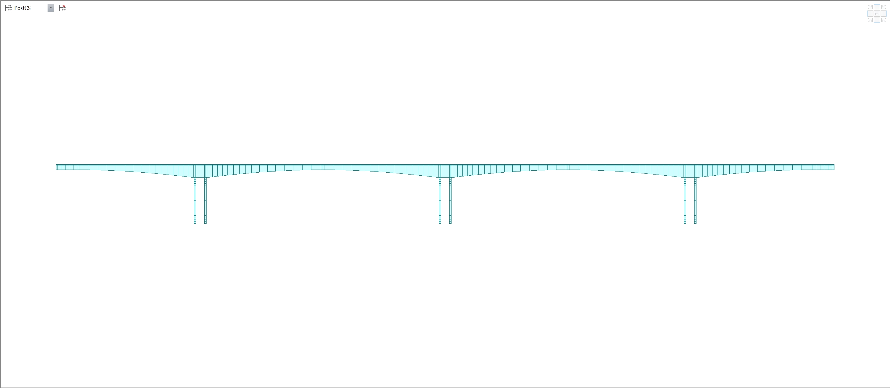
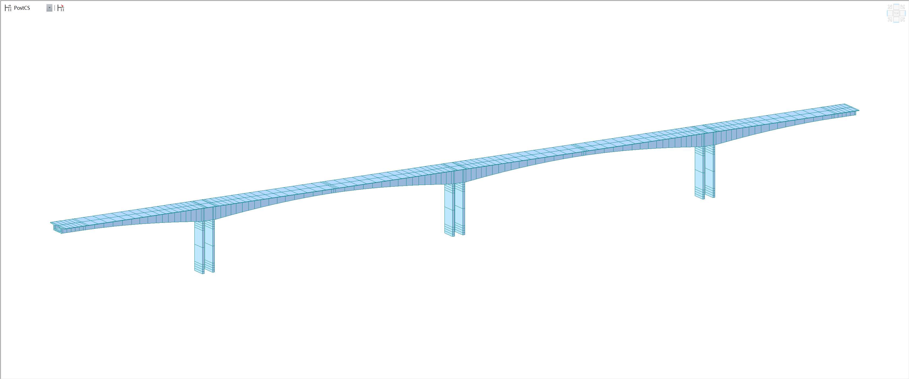

ADPR
项目信息
状态统计
项目状态
设备状态
测点状态
实时监测
时程曲线
时频曲线
位移与挠度
台站数据
异常数据
异常数据分析
异常数据处理
数据分析
数据管理
历史数据查询
历史数据导出
报警管理
三维模型
有限元分析
模态分析
仿真模拟
档案管理
每月报告
年度报告
事件报告
视频监控
帮助文档
烈度速报
项目配置
项目列表
模态分析
阶数 1# 周期:1.14s #特征描述:主梁纵向振动，2、3、4号墩柱纵向弯曲
阶数 2# 周期:0.7392s #特征描述:主梁侧弯，2、3、4号墩柱侧弯
阶数 3# 周期:0.7246s #特征描述:主梁竖向一阶反对称弯曲
阶数 4# 周期:0.7019s #特征描述:主梁横向一阶反对称弯曲
阶数 5# 周期:0.552s #特征描述:一侧端部主梁横向一阶对称弯曲
阶数 6# 周期:0.519s #特征描述:主梁一阶对称竖弯
阶数 7# 周期:0.4921s #特征描述:另一侧端部主梁横向一阶对称弯曲
阶数 8# 周期:0.3615s #特征描述:主梁竖二阶反对称向弯曲
阶数 9# 周期:0.3372s #特征描述:主梁横向二阶反对称弯曲
阶数 10# 周期:0.3242s #特征描述:主梁竖向一阶竖弯
立面图

三维图
